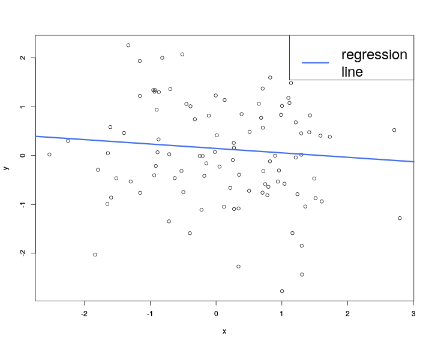
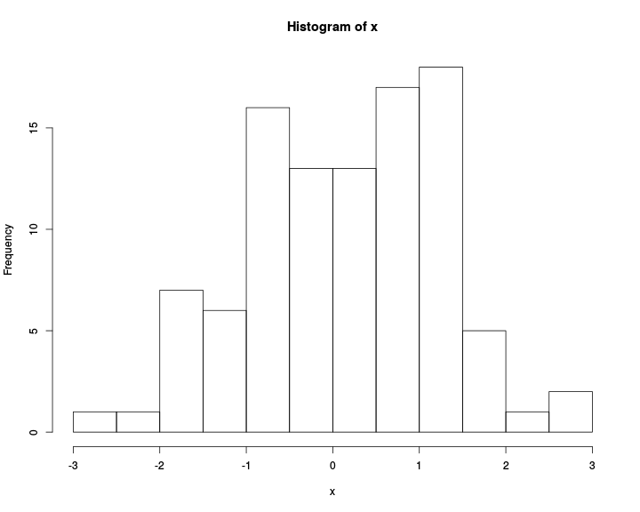

Derived from the S language
http://www.r-project.org/
R provides excellent graphics functionality (base graphics and additional packages)
Can be used both as a glorified calculator or as a “real” programming language
1 + 1[1] 22 + 3 * 4[1] 14sqrt(9)[1] 3pi[1] 3.141593x <- 5 #allocate value to an object
x = 5 #as above
print(x) # objects in console[1] 5x #same[1] 5a <- sqrt(81) #square root
b <- exp(2) #exponential function
c <- log(50) #logarithm
a * b + c #basic operations[1] 70.41353help("fun")
?funThe sos package (see next slide for installing packages) and the findfn function
install.packages("new_package")
install.packages(c("new_package1", "new_package2"))update.packages()# define vector by means of the
# specification of its single elements
W <- c(1,2,3,5,9,7)
W[1] 1 2 3 5 9 7# vector with a 3 (repeated 5 times)
X <- rep(3,5)
X[1] 3 3 3 3 3# combine vectors
A <- c(W,X)
A [1] 1 2 3 5 9 7 3 3 3 3 3# vector with values from 1 to 10 with stepsize 2
Y <- seq(0,10,2)
Y[1] 0 2 4 6 8 10#equals seq(0,10,1)
Z <- 0:10
Z [1] 0 1 2 3 4 5 6 7 8 9 10# element-wise addition
W+Y[1] 1 4 7 11 17 17# element-wise multiplication
W*Y[1] 0 4 12 30 72 70# element-wise multiplication with a scalar
5*W [1] 5 10 15 25 45 35length(W) #determine length of vector[1] 6t(W)%*%Y #transposition and vector multiplication [,1]
[1,] 188W[4] #select specific element[1] 5W[W>2][1] 3 5 9 7W[W>2 & W<7][1] 3 5which(W>2) #determine indices where a condition holds[1] 3 4 5 6A=matrix(0,nrow=2,ncol=3) #Initialize 2x3 matrix including 0
A [,1] [,2] [,3]
[1,] 0 0 0
[2,] 0 0 0A[1,3]=5 #allocate single value at position (1,3)
A [,1] [,2] [,3]
[1,] 0 0 5
[2,] 0 0 0A[,2]=c(1,2) #allocate values to a whole column (analogously with rows)
A [,1] [,2] [,3]
[1,] 0 1 5
[2,] 0 2 0A[-3] # A without the third element[1] 0 0 2 5 0B=matrix(c(1,1,1,2,2,2,3,3,3),3,3) #Initialize matrix with single values
B [,1] [,2] [,3]
[1,] 1 2 3
[2,] 1 2 3
[3,] 1 2 3C=diag(c(1,2,3)) #diagonal matrix
C [,1] [,2] [,3]
[1,] 1 0 0
[2,] 0 2 0
[3,] 0 0 3B * C #element-wise operations [,1] [,2] [,3]
[1,] 1 0 0
[2,] 0 4 0
[3,] 0 0 9B + C [,1] [,2] [,3]
[1,] 2 2 3
[2,] 1 4 3
[3,] 1 2 6B %*% C # matrix multiplication [,1] [,2] [,3]
[1,] 1 4 9
[2,] 1 4 9
[3,] 1 4 9A [,1] [,2] [,3]
[1,] 0 1 5
[2,] 0 2 0(A <- rbind(A, c(0, 1, 5))) #add row [,1] [,2] [,3]
[1,] 0 1 5
[2,] 0 2 0
[3,] 0 1 5(A <- cbind(A, c(0, 1, 4))) #add column [,1] [,2] [,3] [,4]
[1,] 0 1 5 0
[2,] 0 2 0 1
[3,] 0 1 5 4for loopsfor (i in 1:3) {
print(i)
}[1] 1
[1] 2
[1] 3item <- c("Apple", "Orange", "Tomato")
for (i in item)
print(i)[1] "Apple"
[1] "Orange"
[1] "Tomato"while loopi <- 5
while(i < 10){
print(i)
i <- i + 1
}[1] 5
[1] 6
[1] 7
[1] 8
[1] 9if-then-elsex <- 8
y <- 7
if (x < y) {
print(x)
} else {
print(y)
}[1] 7ifelse()(z <- ifelse(x < y, x, y))[1] 7ifelse works with vectorsa <- c(3, 7, 8)
b <- c(4, 6, 9)
ifelse(a < b, a, b)[1] 3 6 8# Value of a N(5,34) density function of at point x=2
dnorm(x=2, mean = 5, sd = 7) [1] 0.05199096# Value of a N(0,1) distribution function at point x=2
pnorm(q=2, mean = 0, sd = 1) [1] 0.9772499# p-quantile of a N(0,1) distribution
qnorm(p=0.25, mean = 0, sd = 1) [1] -0.6744898# Simulation of 50 N(0,1)-distributed random variables
x <- rnorm(n=50, mean = 0, sd = 1) rexp(n = 5, rate = 1) # exponential distribution[1] 0.6110427 1.7664280 0.6878531 0.1387789 0.3543886punif(1.5, 1, 2) # Uniform distribution [1,2][1] 0.5See the distribution help page and the Distribution task view for all distributions available
x <- abs(rnorm(50, 2, 2)) #abs: absolute value
sqrt(x) #square root
exp(x) #exponential function
log(x) #logarithm
sin(x) #sinus
cos(x) #cosinus
sort(x) #sort entries
quantile(x,0.25) #sample 25%-quantile
mean(x) #sample mean
var(x) #sample variance
sd(x) #sample standard deviation
sqrt(var(x))
median(x) #sample median
min(x) #sample minimum
max(x) #sample maximum
summary(x) #Overview of important sample parametersmyFun <- function(x) {
x^2 + 1
}
myFun(3)[1] 10complicated_function <- function(x, y = 2, text = "apple") {
length_text <- nchar(text)
if (y > 0) {
res <- x + log(y) * length_text
} else {
res <- x + log(abs(y)) * length_text
}
res
}(a <- complicated_function(x = 10))[1] 13.46574(b <- complicated_function(10, -2, "fffff"))[1] 13.46574a <- sqrt(2)
a * a - 2[1] 4.440892e-16a * a == 2[1] FALSEx <- c("Franz", "Anton", "Heinrich")
y <- c(1.0, 1.7, 2.7)
z <- c(95, 85, 67)
grades_list = data.frame(name=x, grade=y, points=z) #create Data Frame
grades_list name grade points
1 Franz 1.0 95
2 Anton 1.7 85
3 Heinrich 2.7 67# add a row
(grades_list <- rbind(grades_list,
data.frame(name= "Maria", grade = 3.7, points = 54)) ) name grade points
1 Franz 1.0 95
2 Anton 1.7 85
3 Heinrich 2.7 67
4 Maria 3.7 54# create new gender vector
gender <- c(rep("m", 3), "f")
grades_list <- cbind(grades_list, gender) #add column
grades_list name grade points gender
1 Franz 1.0 95 m
2 Anton 1.7 85 m
3 Heinrich 2.7 67 m
4 Maria 3.7 54 fgrades_list$points[1] 95 85 67 54grades_list[, "points"][1] 95 85 67 54grades_list[, 3][1] 95 85 67 54grades_list[[3]][1] 95 85 67 54# determine mean grade of all male individuals
x <- subset(grades_list, gender == "m")$grade
# equivalently
y <- grades_list[grades_list$gender == "m", "grade"]
mean(x) == mean(y)[1] TRUEx <- rnorm(100)
y <- rnorm(100)
plot(x, y, col = 1)
abline(lm(x~y), lwd = 3, col = "royalblue2")
legend("topright", "regression\nline", col = "royalblue2",
lwd = 3, cex = 2)
hist(x)